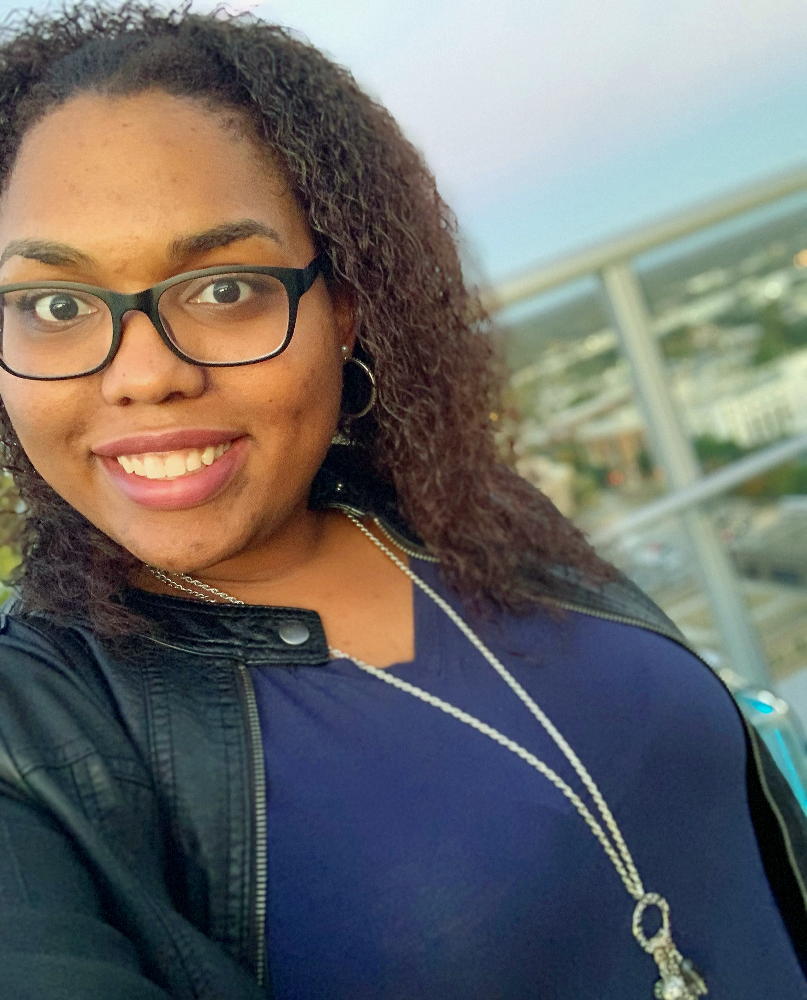

About Me
I was born in Queens Village, New York in the middle of an ice storm during the early morning hours of February 9, 1994. Technically, I should've been born on April 15 (Tax Day, wahoo!), but the frigid temperature likely had my fetus-self shaking like a leaf in utero and I just had to escape. Coincidentally, it was also my grandpa's birthday, which everyone forgot until much later that day because a woman in labor naturally demands all the attention.
I have one younger sibling, Josh, who was born in New Jersey. He'll be 21 in November and we're exactly 4 years and 9 months apart in age. My family moved to Mooresville, NC in August 2003 right before I started 4th grade and I've been here since. While I love that we don't have much winter weather, the incessant heat and crushing humidity of the Carolinas can be too much too bear.
Since the world fortunately didn't end in 2012, I continued my undergraduate studies, leaving UNC Charlotte in 2016 with a Psychology, B.S. and a large debt to Uncle Sam. However, the uncertainty of pursuing a master's degree due to my disdain for standardized testing (the GRE) & indecision, led me into a year-long certificate program in ophthalmic medical assisting at CPCC. I learned a lot about the eyes and how they're connected to wholistic health. With that knowledge, I spent the last 2 years working with a pediatric ophthalmologist, doing what others tend to avoid at all costs: taking care of other people's children. Now, in late 2019, I've set out on another knowledge conquest; bright-eyed and fresh-faced, I've gone down the path of web development.